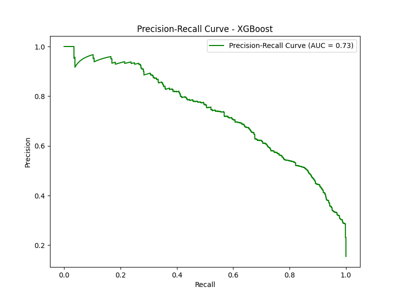
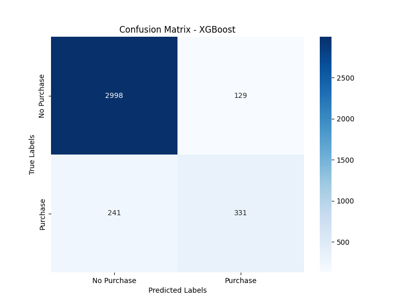

Machine learning · E-commerce · Case study 06
Predicting who will abandon their cart, and reporting the hard number instead of the flattering one.
Five classifiers, 12,330 shopping sessions, and one lesson about class imbalance that every model card should carry.
- Data
- 12,330 sessions, 18 features; 15.5% end in a purchase
- Models
- Logistic regression, KNN, decision tree, random forest, XGBoost
- Stack
- Python, scikit-learn, imblearn, XGBoost
- Code
- GitHub ↗
01 — The questionCan we tell, mid-session, who is about to leave?
Most online shopping sessions end without a purchase, and every abandoned cart is revenue walking away. If a model can spot, from browsing behaviour alone, which sessions will convert and which won’t, a business can step in at the right moment with a reminder, an offer or a simpler checkout. It can also avoid wasting discounts on people who were going to buy anyway.
02 — The methodA pipeline that can’t cheat
Only 15.5% of sessions end in a purchase, so a lazy model can score 85% accuracy by predicting “no” every time. Two decisions kept the evaluation honest:
- Leak-free preprocessing. Scaling and one-hot encoding are fit only on the training fold, inside a single scikit-learn/imblearn pipeline.
- SMOTE inside the pipeline. Synthetic oversampling of buyers happens only on training data, so the test set stays real.
I compared logistic regression, KNN, a decision tree, a random forest and XGBoost, choosing on macro F1, which weighs buyers and non-buyers equally, rather than accuracy.
03 — The resultXGBoost wins. Here is what that really means.
| XGBoost, test set | Precision | Recall | F1 | Sessions |
|---|---|---|---|---|
| No purchase (majority) | 93% | 95% | 94% | 2,084 |
| Purchase (the one that matters) | 69% | 62% | 65% | 382 |
Overall: 90% accuracy, 0.92 AUC-ROC, macro F1 of 0.80.
Session behaviour carried the signal. Time spent on product pages, page value and proximity to special days such as holidays were the strongest predictors.


04 — The correctionI caught my own mistake
An earlier version of the project quoted an AUC of 0.93 that didn’t match a fresh run of the pipeline, and it reported only majority-class scores. I rebuilt the preprocessing to be leak-free, re-ran everything, and replaced the headline with numbers reproduced straight from the saved metrics file. In AI work that matters: a model that looks great on a slide and disappoints in production costs more than one that was honestly average.
05 — What I’d do nextMake the threshold a business decision
- Tune the decision threshold by cost. Wrongly discounting a sure buyer and missing a real abandoner don’t cost the same.
- Add cross-validated metrics with variance, not a single split.
- Add user-level and product-level features (loyalty, categories, discounts) and score sessions in real time.
- Prove the business impact with an A/B test of the intervention itself.